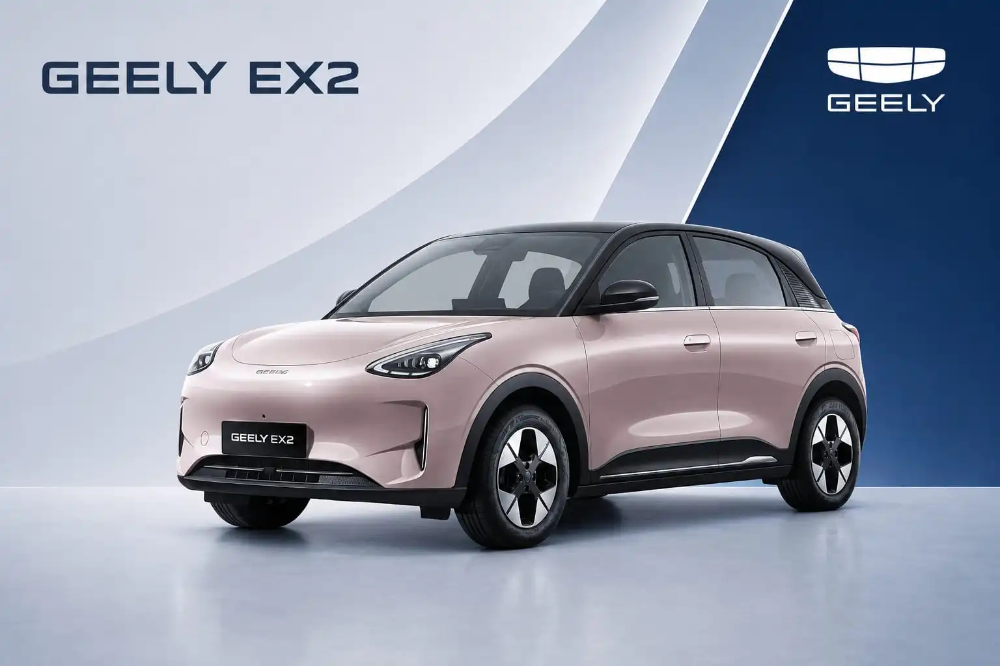

Geely EX2
Geely EX2 adalah hatchback listrik kompak dengan penggerak roda belakang, baterai LFP 40,8 kWh, dan jarak tempuh hingga 395 km (standar NEDC). Lincah di jalanan kota, hemat biaya perawatan, dan tersedia dalam dua tipe: Pro dan Max.
Harga mulai Rp 239.900.000 (OTR Jakarta). Hubungi Romin untuk harga dan promo terbaru.
Spesifikasi Utama
Kenali performa dan dimensi Geely EX2. Dimensi bodi dibuat kompak untuk jalanan kota, tetapi wheelbase yang panjang membuat kabin tetap terasa lega.
Dimensi
Performa
Baterai dan Pengisian Daya
Fitur Unggulan
Perpaduan teknologi baterai, performa, dan kepraktisan yang dirancang untuk pemakaian harian di perkotaan.
- Baterai LFP 40,8 kWh dengan jarak tempuh hingga 395 km (NEDC), cukup untuk pemakaian harian dan perjalanan ke luar kota.
- Fast charging DC dari 30% sampai 80% dalam sekitar 25 menit.
- Motor listrik 114 hp dengan torsi instan 150 Nm yang disalurkan ke roda belakang.
- Bagasi belakang 375 liter, bisa diperluas hingga 1.320 liter saat jok dilipat, ditambah frunk (bagasi depan) 70 liter.
- Layar sentuh HD 14,6 inci dengan sistem infotainment Flyme Auto sebagai pusat kendali berbagai fitur.
- Fitur V2L (Vehicle to Load) untuk menyalakan perangkat elektronik dari baterai mobil.
- Radius putar hanya 4,95 meter sehingga lincah di jalan sempit dan mudah saat parkir.
Fitur Kenyamanan
Kabin minimalis dengan sedikit tombol fisik, ruang kaki yang lega, dan suspensi yang disetel untuk kondisi jalan di Indonesia.
- Kabin lega berkat wheelbase 2.650 mm, termasuk ruang kaki baris kedua.
- AC otomatis dengan lubang ventilasi untuk penumpang baris belakang.
- Instrumen cluster digital 8,8 inci di depan pengemudi.
- Suspensi MacPherson di depan dan multi-link di belakang untuk kenyamanan di jalan bergelombang.
- Jok pengemudi dengan pengaturan 6 arah: manual pada Pro, elektrik pada Max.
- Lampu ambient 256 pilihan warna Max
- Interior warna Ivory White yang lebih cerah Max
- Remote ventilation dan konektivitas 4G untuk kontrol jarak jauh Max
Keselamatan
Fitur keselamatan dasar tersedia di kedua tipe, sementara tipe Max menambahkan perlindungan aktif dan pasif yang lebih lengkap.
- Geely Battery Safety System untuk melindungi baterai, ditambah sistem pendingin baterai berbasis cairan.
- 4 airbag pada tipe Pro.
- 6 airbag, termasuk side curtain airbag, pada tipe Max. Max
- Kamera mundur pada tipe Pro.
- Kamera panoramik 540° dengan tampilan transparan di bawah bodi mobil. Max
- ADAS 12 fungsi, termasuk Adaptive Cruise Control dan Lane Keeping Assist. Max
Perbedaan Geely EX2 Pro dan Max
Kedua tipe memakai motor dan baterai yang sama, sehingga performa dan jarak tempuhnya identik. Perbedaannya ada pada kelengkapan fitur, tampilan, dan keselamatan.
| Fitur | EX2 Pro | EX2 Max |
|---|---|---|
| Velg | Velg kaleng 15 inci dengan dop | Velg alloy two-tone 16 inci |
| Warna bodi | One-tone | Two-tone, atap dan pilar A hitam |
| Warna interior | Dark Grey | Ivory White |
| Jok pengemudi | Manual 6 arah | Elektrik 6 arah |
| Lampu ambient | Tidak ada | 256 warna |
| Kamera | Kamera mundur | Kamera panoramik 540° |
| Airbag | 4 airbag | 6 airbag (termasuk side curtain) |
| ADAS | Tidak ada | 12 fungsi |
| Konektivitas 4G dan remote | Tidak ada | Ada |
| Motor dan baterai | Sama: 114 hp, 150 Nm, baterai 40,8 kWh, jarak tempuh 395 km | |
Harga Geely EX2 Tiap Tipe
Pilih tipe sesuai kebutuhan dan anggaran Anda. Selisih harga kedua tipe sekitar Rp 30 juta.
Rp 239.900.000
Harga OTR Jakarta
- Velg kaleng 15 inci
- 4 airbag dan kamera mundur
- Jok pengemudi manual
Rp 269.900.000
Harga OTR Jakarta
- Velg alloy two-tone 16 inci
- 6 airbag, kamera 540°, ADAS 12 fungsi
- Jok pengemudi elektrik dan lampu ambient
Harga on the road (OTR) Jakarta berdasarkan informasi Geely Auto Indonesia per Maret 2026. Harga, promo, dan program pembiayaan dapat berubah sewaktu-waktu. Hubungi Romin untuk penawaran terbaru.
Garansi
Pembelian Geely EX2 dilindungi garansi jangka panjang untuk kendaraan dan komponen utama kendaraan listrik.
Biaya servis berkala Geely EX2 tercatat Rp 7.182.255 untuk total 5 tahun atau 100.000 km (data Geely Auto Indonesia). Syarat dan ketentuan garansi dapat berubah. Tanyakan detailnya kepada Romin.
Tertarik dengan Geely EX2?
Hubungi Romin untuk trade-in mobil lama Anda, jadwal test drive, atau konsultasi pembelian Geely EX2. Melayani Jakarta Utara, Selatan, Barat, Pusat, Timur, Pluit, Sunter, Bekasi, Tangerang, Cibubur, dan Cikarang.